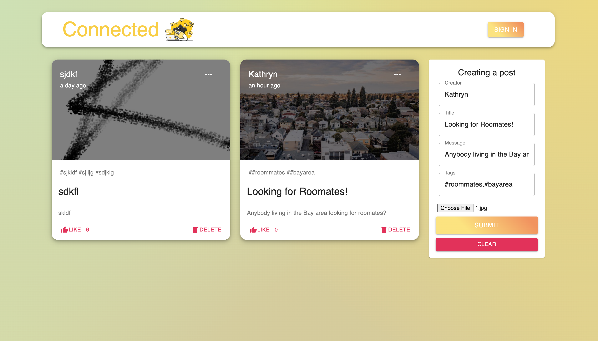
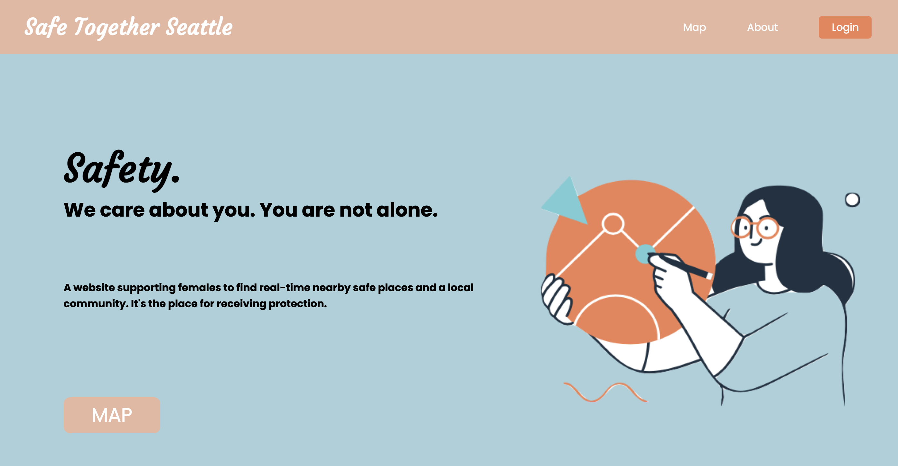

Skills: React.js, Express.js, Node.js, MongoDB
- Created a web application which allow users post messages as personal blogs or connect with others, and supports CRUD operations and like on the post, and deployed on Heroku and Netlify
- Continue implementing the Authentication and user login syste

Skills: JavaScript, Google Maps API, Firebase, HTML/CSS, Figma
- Led a team of three, won the Most Courageous Hack #1
- Created a website supporting female-identifying users to find real-time nearby safe places and communities
- Implemented Firebase Authentication for user login system
Skills: Python, Numpy, Pandas, Matplotlib, SciPy, Scikit-learn
- Worked on a dataset with more than 520,000 entries and munged raw data with Python packages Pandas and NumPy.
- Conducted correlation, regression models, and clustering analyses of data, and visualized data with Matplotlib.
- Built prediction models to predict movie ratings based on user features.
Skills: JavaScript, p5.js
- Basic uses of HTML DOM and CSS
- Produced a interactive web project and practiced Object Oriented Programming (OOP)